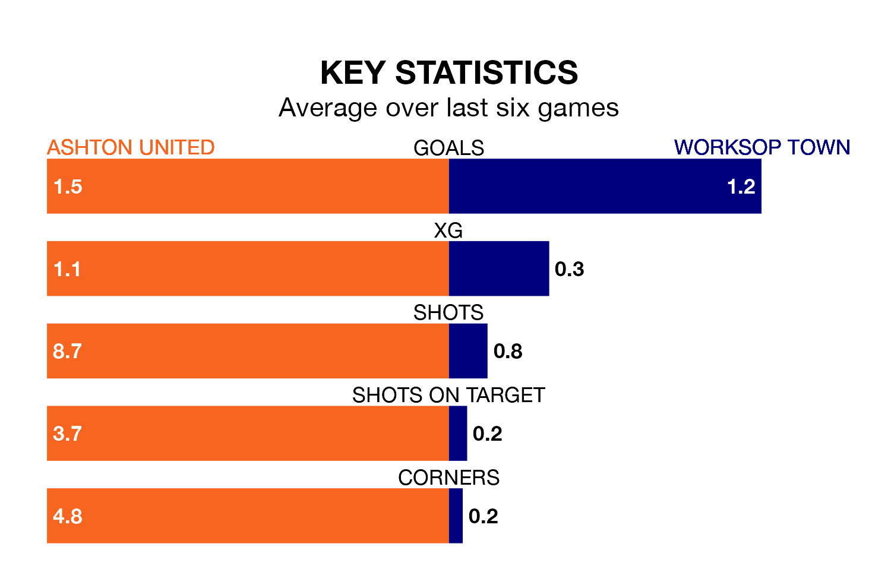

Ashton United host Worksop Town on Saturday at Hurst Cross in the Northern Premier League.
In their last league match, on February 17, Ashton drew with Bradford Park Avenue 1-1 away.
Worksop lost, 4-2 at home against Bamber Bridge on February 24.
With 60 goals in 31 games so far this season, Worksop are scoring more than average in the league with 1.9 goals per game. And they are conceding fewer than average, letting in 34 goals at a rate of 1.1 per game.
Ashton, meanwhile, are average scorers, with 1.6 goals per game. They have also conceded 1.6 goals per game.
Town are fifth in the table after 31 games, of which they have won 15 and drawn eight, earning 53 points.
United are six places behind the away side in 11th, with 12 wins and 10 draws putting them on 46 points.
The hosts are in mixed form in the Northern Premier League, with one win and four draws from their last six games.
With two wins and three draws over that period, Worksop's form is slightly better – they have taken nine points from 18, compared to Ashton's seven.
Updated: 09:34 (UTC), 08/03/24